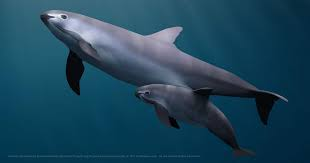

OceanPulse Preservation Fund is a dedicated
force in the realm of marine conservation,
tirelessly working to protect and sustain the delicate balance of ocean wildlife and habitats.
Committed to the health and vitality of our oceans, we employ innovative strategies to preserve and restore threatened marine ecosystems.
From safeguarding vulnerable species to promoting sustainable fishing practices, OceanPulse aims to create a ripple effect of positive change throughout the world's oceans.
Through collaborative efforts with local communities, scientists, and policymakers, the OceanPulse Preservation Fund strives to ensure a thriving future for marine life,
fostering a deep connection between humanity and the breathtaking wonders that lie beneath the surface.
With a pulse that resonates with passion for the seas, this organization champions a harmonious coexistence between humans and the ocean environment.
OceanPulse Preservation Fund is at the forefront of ocean conservation, implementing a multifaceted approach to address the pressing issues facing our marine environments.
Through rigorous scientific research, we have identified key areas of concern, focusing on the protection of endangered species and the restoration of damaged habitats.
OceanPulse actively engages in community outreach programs, educating and empowering coastal communities on sustainable fishing practices and the importance of preserving their local marine ecosystems.
We also collaborate with policymakers to advocate for stronger regulations aimed at curbing pollution and overfishing.
In addition, OceanPulse invests in innovative technologies and projects that contribute to the overall health of the oceans, such as coral reef restoration initiatives and the development of eco-friendly fishing gear.
By combining science, education, advocacy, and technology, OceanPulse Preservation Fund strives to create a comprehensive and lasting impact on the well-being of our oceans, ensuring a vibrant and sustainable future for marine life and the communities that depend on it.
The Vaquita Porpoise, one of the rarest marine mammals on Earth, faces imminent extinction, and your support can make a crucial difference.
With only a handful remaining in the wild, the Vaquita is threatened by illegal fishing practices, specifically the use of gillnets to catch another endangered species, the totoaba fish.
Tragically, Vaquitas often become unintentional victims of these nets.
OceanPulse Preservation Fund is actively engaged in efforts to save the Vaquita through increased patrolling of their habitat, collaboration with local communities to promote sustainable fishing alternatives, and supporting the development of alternative fishing gear that minimizes harm to marine life.
By donating to OceanPulse, you contribute to a lifeline for the Vaquita Porpoise and many other sea animals, helping to fund critical conservation initiatives that can turn the tide and ensure the survival of these unique and endangered species.
Your support is not just a donation; it's an investment in the preservation of biodiversity and the delicate balance of our oceans.

This audio file will play the sounds of a Viquita Porpoise